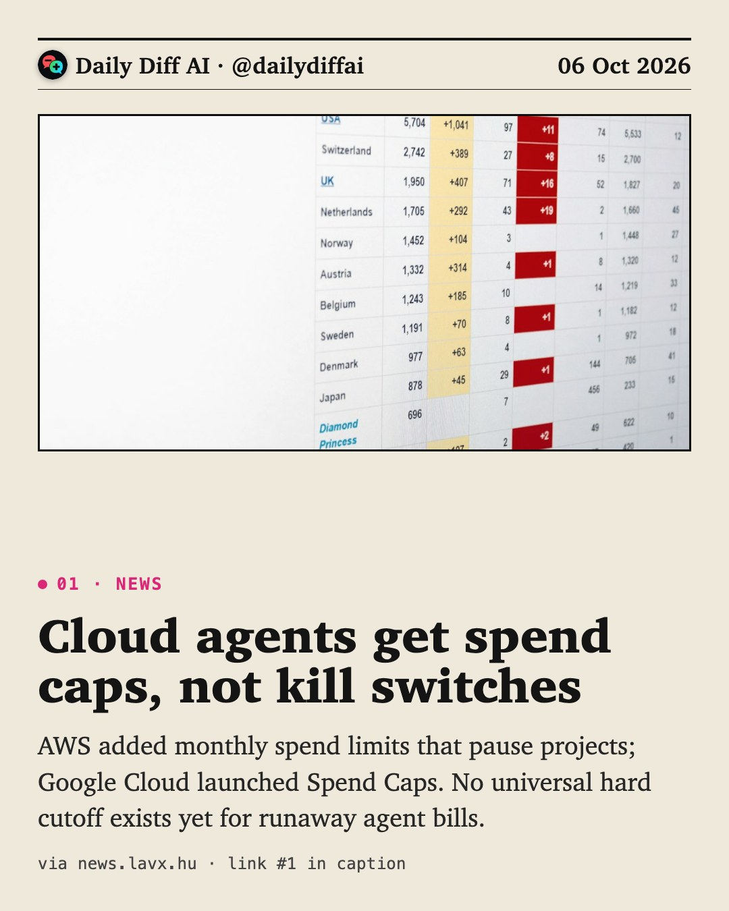
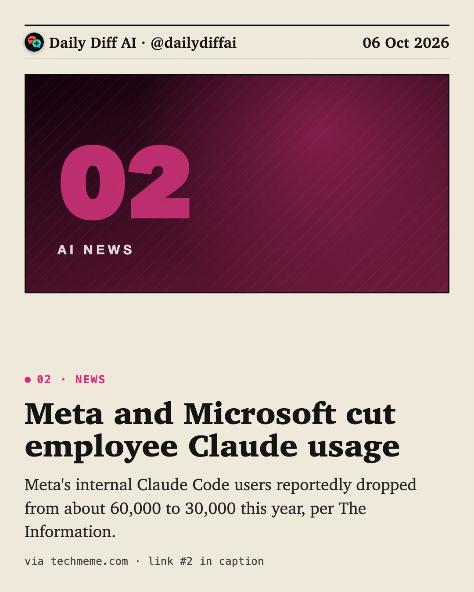
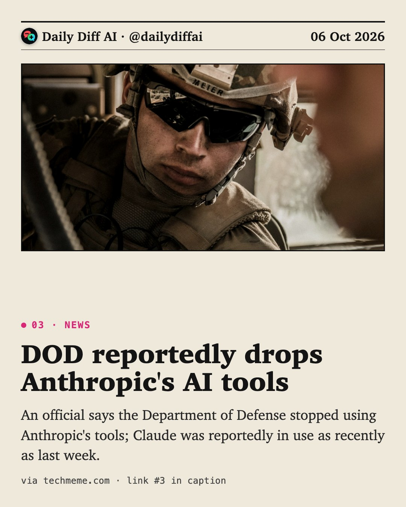
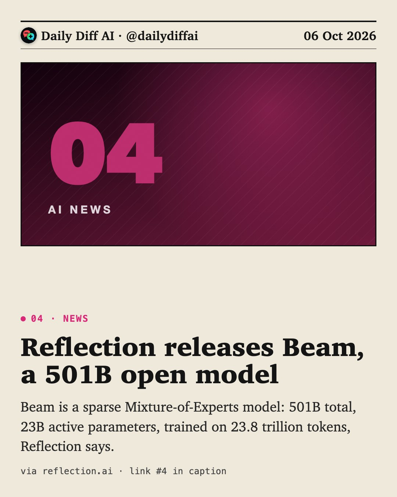
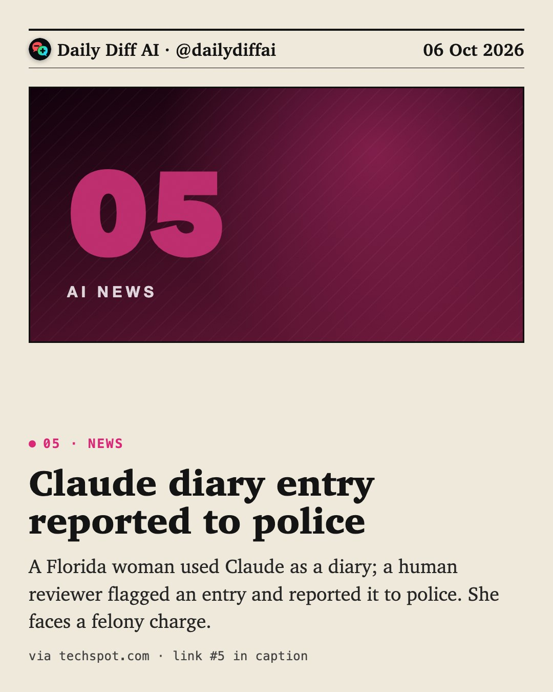
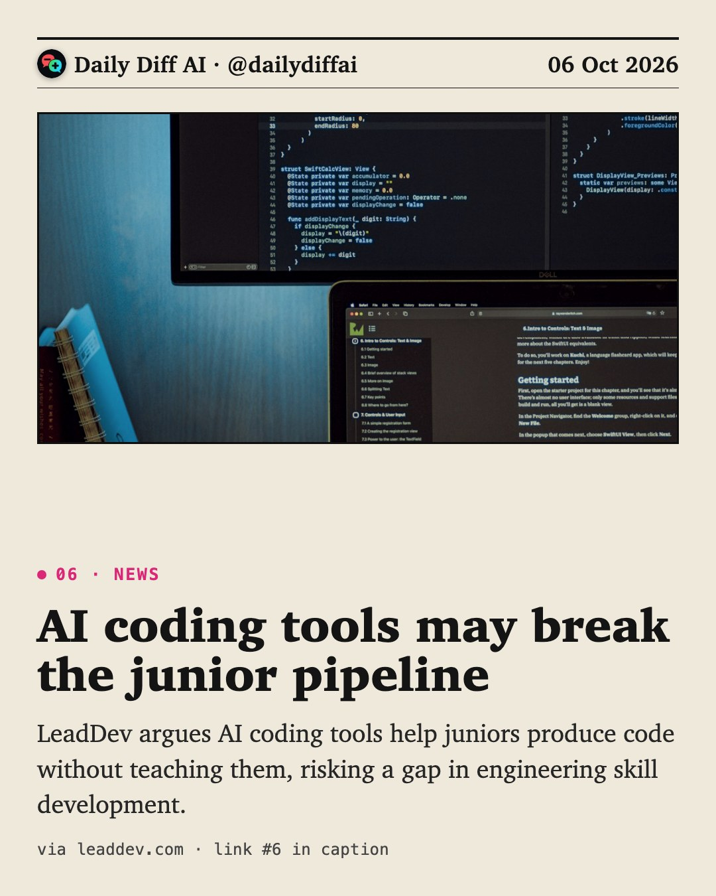
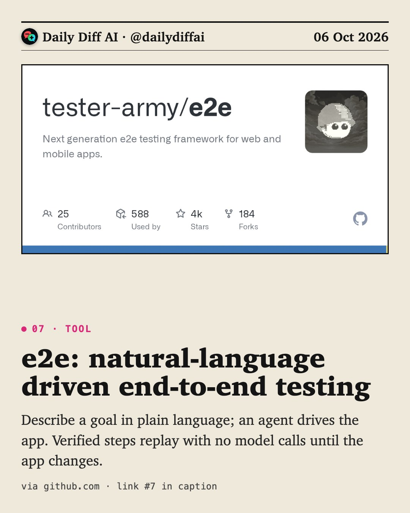
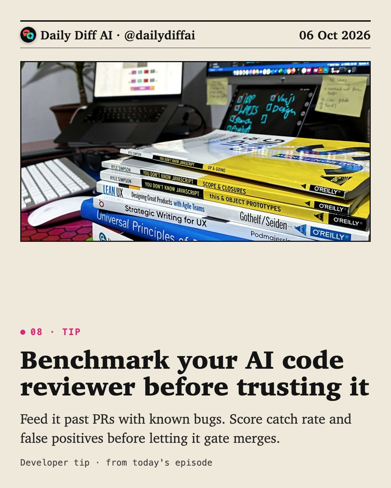

Daily Diff AI

Cloud agents get spend caps, not kill switches
AWS added monthly spend limits that pause projects; Google Cloud launched Spend Caps. No universal hard cutoff exists yet for runaway agent bills.
Read on news.lavx.hu →
Meta and Microsoft cut employee Claude usage
Meta's internal Claude Code users reportedly dropped from about 60,000 to 30,000 this year, per The Information.
Read on techmeme.com →
DOD reportedly drops Anthropic's AI tools
An official says the Department of Defense stopped using Anthropic's tools; Claude was reportedly in use as recently as last week.
Read on techmeme.com →
Reflection releases Beam, a 501B open model
Beam is a sparse Mixture-of-Experts model: 501B total, 23B active parameters, trained on 23.8 trillion tokens, Reflection says.
Read on reflection.ai →
Claude diary entry reported to police
A Florida woman used Claude as a diary; a human reviewer flagged an entry and reported it to police. She faces a felony charge.
Read on techspot.com →
AI coding tools may break the junior pipeline
LeadDev argues AI coding tools help juniors produce code without teaching them, risking a gap in engineering skill development.
Read on leaddev.com →
e2e: natural-language driven end-to-end testing
Describe a goal in plain language; an agent drives the app. Verified steps replay with no model calls until the app changes.
Read on github.com →
Benchmark your AI code reviewer before trusting it
Feed it past PRs with known bugs. Score catch rate and false positives before letting it gate merges.